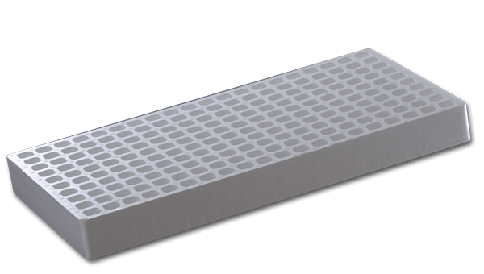
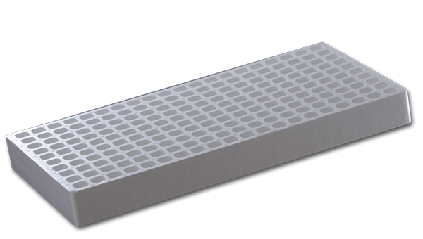

Semilleros
Está comprobado que los Semilleros de Poliestireno Expandido (EPS) FANOSA® optimizan el aprovechamiento de los recursos como agua de riego, nutrientes, mano de obra, tiempo, etc. El uso de estos semilleros garantiza un gran beneficio en su invernadero, en relación con su costo, por su durabilidad y facilidad en el tratamiento de esterilización.
 
